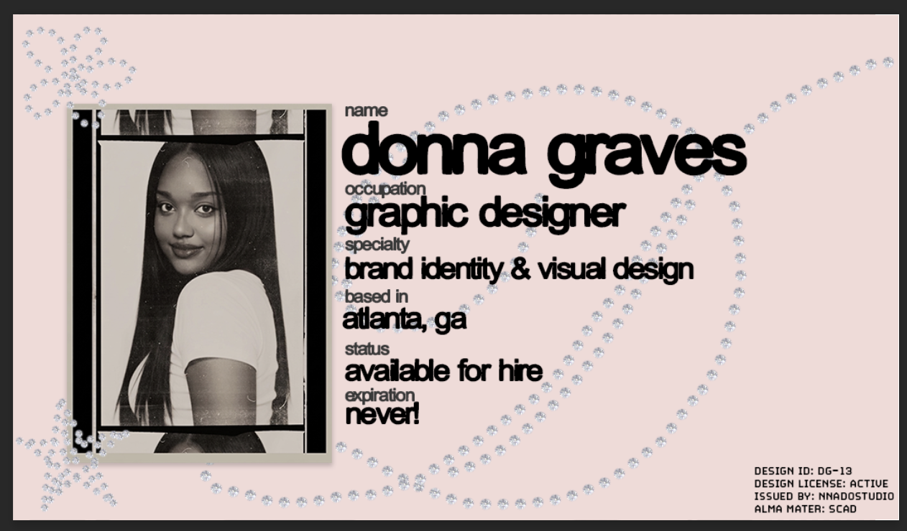

SCAD
B.A. in Graphic Design from the Savannah College of Art and Design, completed May 2026.
Donna Graves / independent graphic designer
the designer behind
nnado studio ♡
I create thoughtful visual identities with expressive typography, useful systems, and enough personality to actually be remembered.

a little about me
I’m Donna Graves, an independent graphic designer and the person behind nnado studio. I’m based in Dallas, Georgia, working with clients across metro Atlanta and beyond.
I specialize in brand identity and visual design—building the logos, typography, colors, layouts, packaging, and details that turn a good idea into a world people can recognize. I like work that feels polished but still human, playful without becoming messy, and expressive without losing the point.
For me, branding is less about decorating a business and more about helping it look unmistakably like itself. Every choice should create a feeling, solve a problem, or make the next choice easier. Ideally, it does all three.
The professional bits
B.A. in Graphic Design from the Savannah College of Art and Design, completed May 2026.
Ongoing freelance designer supporting visual identity, social and digital assets, content planning, and brand communication.
A.A. in Art History from Perimeter College—the part of my brain that will always care about context, references, and why something looks the way it does.
Independent designer and founder of an evolving practice built around brand identity, visual systems, art direction, and good ideas with personality.
what matters in the work
I’m not interested in adding quirks just to prove something was designed. The personality has to support the story, audience, and goal.
A strong identity should help you make future decisions. I build visual tools that can flex across print, packaging, campaigns, and digital spaces.
I translate feedback into clear design decisions, explain the reasoning, and keep the process organized enough that it still feels fun.
designer brain / human person
When I’m not designing, I’m probably collecting references, making something with my hands, paying too much attention to packaging, or mentally redesigning a sign I passed five minutes ago.
okay, enough about me—